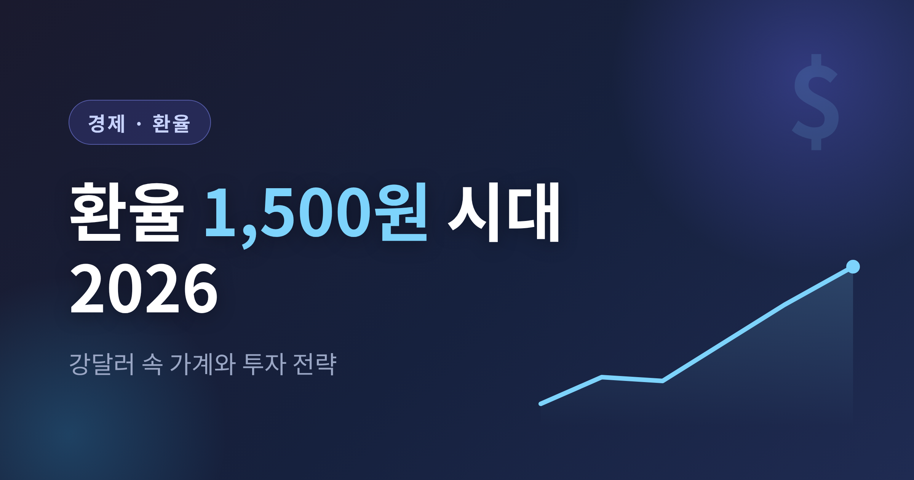
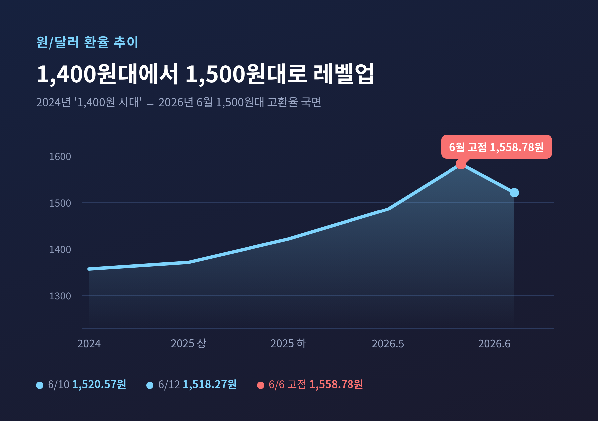
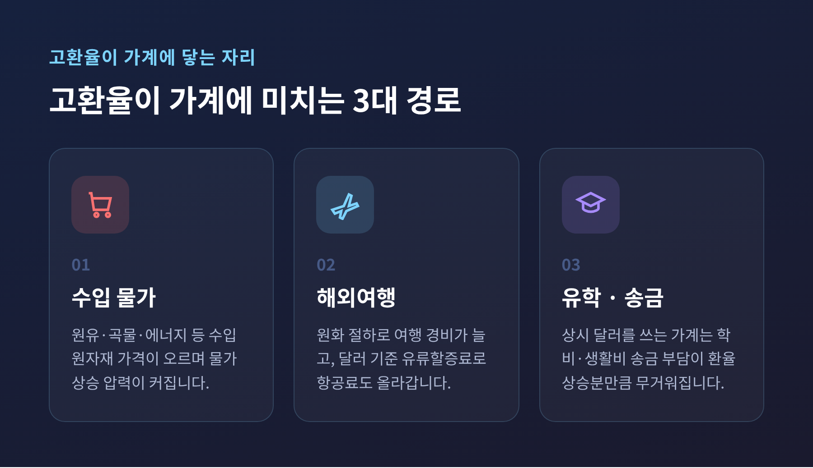
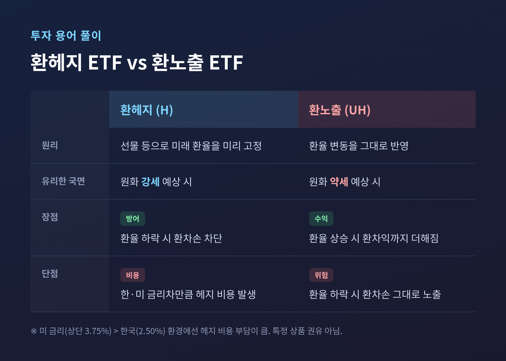
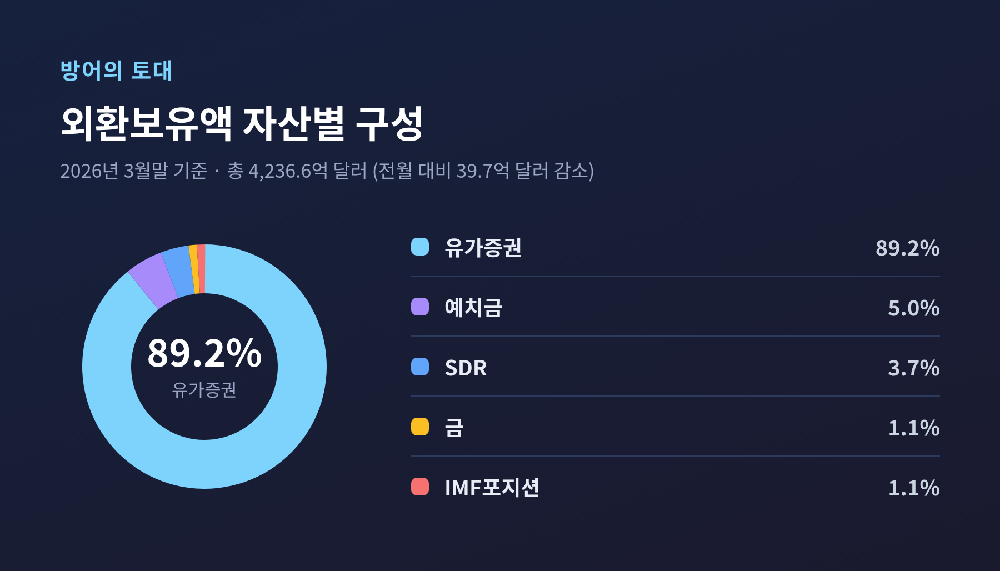

환율 1,500원 시대 2026 — 강달러 속 가계와 투자 전략

이번 글에서는 2026년 6월 현재의 고환율 국면을 정리해 보겠습니다.
'1,400원 시대'라는 말이 익숙해질 무렵, 환율은 이미 1,500원대로 올라섰습니다.
강달러가 가계 살림과 투자에 어떤 영향을 주는지, 그리고 어떤 관점으로 대응이 논의되는지 차분히 짚어보겠습니다.
먼저 핵심부터 세 줄로 정리하겠습니다.
- 2026년 6월 원/달러 환율은 1,500원대(약 1,510~1,560원)로, '1,400원 시대'를 이미 넘어선 국면입니다.
- 이번 고환율은 미국發 강달러만이 아니라 국민연금·서학개미 등 국내 달러 수요가 큰 몫을 차지합니다.
- 전망은 '연말 1,350원까지 하락'과 '1,400~1,500원대 고착'으로 크게 갈립니다.
미리 밝혀둘 것이 하나 있습니다.
저는 금융 전문가도, 투자 조언자도 아닙니다.
이 글은 공개된 자료를 정리한 정보 제공일 뿐, 특정 상품의 매수·매도 권유가 아닙니다.
'1,400원 시대'는 이미 지났습니다
제목에 익숙한 '1,400원'이라는 숫자부터 솔직하게 바로잡겠습니다.
예전엔 1,400원대가 '뉴노멀'이라 불렸습니다.
지금은 그 인식마저 다시 깨졌습니다.
2026년 6월 10일 기준 원/달러 환율은 1,520.57원이었습니다.
6월 12일에는 1,518.27원, 전 거래일 대비 0.14% 올랐습니다.
6월 중에는 6일 1,558.78원까지 오르며 고점을 찍었고, 8일에는 장중 1,550원을 넘어서기도 했습니다.
최근 한 달 사이 원화는 약 1.9~3.1% 약세를 보였고, 최근 12개월로 보면 약 11% 절하됐습니다.
즉 '1,400원 시대'는 2024~2025년에 만들어진 표현이고, 지금은 1,500원대 고환율 국면이라고 보는 편이 정확합니다.

왜 이렇게 올랐나 — 절반 이상이 '우리 안'의 이유
이번 고환율에는 한 가지 특징이 있습니다.
바깥의 강달러 탓만은 아니라는 점입니다.
한국은행은 최근 환율 상승 요인의 약 70%를 국민연금·개인 등의 해외투자 증가로 진단했습니다.
국민연금이 해외 주식·채권·대체투자에 대규모로 자금을 집행하면서 구조적인 달러 수요가 늘었습니다.
개인이 미국 주식에 직접 투자하는 서학개미 흐름도 같은 방향으로 달러 수요를 키웁니다.
대외 요인도 있습니다.
현재 한국 기준금리는 2.50%, 미국은 상단 3.75%(3.5~3.75% 범위)로 미국이 더 높습니다.
이 금리차가 자금을 미국으로 끌어당겨 달러 수요를 만듭니다.
연준은 4월 회의까지 세 번 연속 금리를 동결했고, 골드만삭스는 2026년 인하 기대를 거두고 오히려 인상 가능성을 10%에서 20%로 올려 잡았습니다.
여기에 무역수지, 외국인 자금 흐름, 트럼프 행정부의 관세 정책 같은 변수가 겹칩니다.
6월 17일 FOMC와 신임 연준 의장의 정책 방향도 시장이 주시하는 변수로 거론됩니다.
고환율이 가계에 닿는 자리 — 장바구니, 여행, 유학
환율은 멀리 있는 숫자처럼 보이지만, 생활 곳곳에 닿습니다.
가장 먼저 물가입니다.
원유·곡물·에너지 같은 수입 원자재 가격이 환율과 함께 오르면서 물가 상승 압력이 커집니다.
수입 의존도가 높은 품목일수록 체감 부담은 더 큽니다.
다음은 해외여행입니다.
일본을 제외한 주요 방문국 통화 대비 원화가 모두 절하되면서 여행 경비 부담이 늘었습니다.
달러로 산정되는 유류할증료 특성상 항공료도 함께 끌어올려졌습니다.
여행은 미룰 수라도 있습니다만, 미루기 어려운 지출도 있습니다.
유학생이나 해외 사업자처럼 상시 달러를 써야 하는 가계는 직접 타격을 받습니다.
학비와 생활비 송금 부담이 환율 상승분만큼 그대로 무거워지는 셈입니다.

가계는 어떻게 대응을 논의하나 (권유가 아닌 정리)
여기서부터는 제 의견이 아니라, 자료들이 공통적으로 말하는 '방향'을 정리한 것입니다.
대부분의 자료가 한 가지 전제를 깔고 있습니다.
"환율은 예측이 어렵다"는 것입니다.
그래서 자료들이 공통으로 권하는 원칙은 방향성에 베팅하지 않는 분산 접근입니다.
유학·여행·송금처럼 달러 실수요가 예정돼 있다면, 한 번에 환전하기보다 분할 환전으로 평균 환율을 관리하는 방식이 일반적으로 언급됩니다.
다만 어느 자료도 '지금이 바닥' 또는 '지금이 꼭지'라고 단정하지 않습니다.
저 역시 타이밍을 맞히는 방법은 알지 못합니다.
이 대목은 어디까지나 일반 원칙을 옮긴 것이라고 받아들여 주시길 권합니다.
환헤지와 환노출 — 용어부터 풀어보겠습니다
투자 이야기로 넘어가면 환헤지와 환노출이라는 말이 자주 나옵니다.
어려워 보이지만 뜻은 단순합니다.
환헤지는 선물 등으로 미래 환율을 미리 고정하는 방식입니다.
환율이 떨어져도 환차손을 막고 기초자산의 상승분을 챙길 수 있어, 원화 강세가 예상될 때 유리합니다.
환노출은 환율 변동을 그대로 반영하는 방식입니다.
환율이 오르면 환차익까지 더해지므로, 원화 약세가 예상될 때 유리합니다.
좋은 점만 있는 것은 아닙니다.
환헤지에는 비용이 따릅니다.
이 비용은 기본적으로 두 나라의 금리차로 결정되는데, 지금처럼 미국 금리(상단 3.75%)가 한국(2.50%)보다 높은 환경에서는 헤지에 그만큼 비용 부담이 생깁니다.
그래서 자료들이 종합적으로 제시하는 현실적 접근은 이렇습니다.
환율 방향을 모를 때는 환노출과 환헤지를 섞어, 오르면 환노출에서 이익을 보고 내리면 환헤지에서 방어하는 식입니다.
방향성에 베팅하지 않겠다는 뜻입니다.
물론 이것은 상품 구조에 대한 설명일 뿐, 특정 ETF나 상품을 사라는 권유가 아닙니다.

당국은 무엇을 하고 있나
원화가 한쪽으로 쏠릴 때 외환당국도 손을 놓고만 있지는 않습니다.
6월 8일 주간거래 장중 환율이 1,550원을 넘어서자 당국은 공식 구두개입에 나섰습니다.
기재부 국제금융국장과 한국은행 국제국장은 NDF 등 일부 투기적 거래가 변동성을 키웠다고 진단하며, "펀더멘털 대비 과도한 변동성과 일방향 쏠림은 용인하지 않고 강력 대응하겠다"는 입장을 밝혔습니다.
방어의 토대가 되는 외환보유액도 함께 보겠습니다.
2026년 3월말 외환보유액은 4,236.6억 달러로, 전월말 4,276.2억 달러보다 39.7억 달러 줄었습니다.
감소 원인은 외화자산의 미달러 환산액 감소와, 국민연금과의 외환스왑 등 시장안정화 조치였습니다.
구성을 보면 유가증권이 3,776.9억 달러로 89.2%를 차지하고, 예치금 5.0%, SDR 3.7%, 금 1.1%, IMF포지션 1.1% 순입니다.
국민연금이 참여하는 '4자 협의체'와 한은-국민연금 외환스왑도 시장 안정 수단으로 거론됩니다.

앞으로는 어떻게 될까 — 전망이 갈립니다
가장 궁금한 대목일 텐데요.
솔직히 말씀드리면, 전망 자체가 정반대로 갈립니다.
한쪽은 하락(원화 강세)을 봅니다.
대외경제정책연구원 등은 2026년 원화 가치 상승을 전망합니다.
미국 금리 인하 기조에 따른 달러 약세 가능성, WGBI 편입에 따른 외국인 채권자금 유입, 수출 회복, 4자 협의체 같은 안정 조치를 근거로 듭니다.
연말 1,350원까지 내릴 수 있다는 시각도 있습니다.
다른 한쪽은 상승 또는 고착을 봅니다.
가계부채 같은 국내 구조적 리스크, 트럼프 관세의 본격화, 한미 금리차 지속을 근거로 1,400~1,500원대가 새 기준점이 될 수 있다고 봅니다.
저는 둘 중 어느 쪽이 맞다고 단언하지 않겠습니다.
전망이 이토록 갈린다는 사실 자체가, 지금이 그만큼 불확실한 국면이라는 신호일 것입니다.
정리하면 이렇습니다.
2026년 6월의 환율은 '1,400원 시대'를 넘어 1,500원대에 올라섰고, 그 원인의 상당 부분은 우리 안의 달러 수요에 있습니다.
가계는 물가·여행·유학에서 부담을 느끼고, 당국은 구두개입과 외환스왑으로 변동성에 대응하고 있습니다.
앞으로의 방향은 누구도 단정하기 어렵습니다.
저 역시 전문가가 아닌 한 사람의 정리자로서 이 글을 적었습니다.
숫자가 어디로 향할지 묻는다면, 저는 모른다고 솔직히 답하겠습니다.
다만 흔들리는 국면일수록, 방향을 맞히려 애쓰기보다 자신의 실수요와 기간부터 차분히 들여다보시길 권합니다.